1 Datos Generales
- Tipo: psicoestimulante derivado de piperidina.
- Nombres comerciales: Consiv, Genéricos.
- Ritalina de liberación inmediata.
- Venta: bajo receta médica.
Guía de farmacología clínica y psicoeducación
Emociones
Regulación emocional: el efecto del fármaco se nota antes en el ánimo que en el síntoma.
Pensamiento
Cognición y creencias: explica al paciente por qué el efecto tarda y qué se espera.
Sueño
Descanso y regulación del ánimo: higiene del sueño sostiene el tratamiento.
Vínculos
Comunicación y familia: el apego a la pauta depende de la red de apoyo.

Este vademécum ha sido diseñado como una herramienta de consulta práctica, clara y accesible para estudiantes y profesionales de la psicología que, en su ejercicio clínico, reciben pacientes derivados desde psiquiatría y que se encuentran bajo tratamiento farmacológico. Su alcance es integral y abarca las principales familias de psicofármacos: antidepresivos, ansiolíticos e hipnóticos, antipsicóticos, estabilizadores del ánimo, así como psicoestimulantes y no estimulantes.
Si bien el rol del psicólogo no es prescribir, su posición en el proceso terapéutico es fundamental para comprender, acompañar y psicoeducar sobre el impacto que estos medicamentos tienen en la vida diaria, las emociones y el cuerpo del paciente. Contar con esta información permite al profesional:
Esta información digital no busca convertir al psicólogo en un farmacólogo, sino en un profesional informado, ético, empático y colaborativo. Porque entendemos que la salud mental se aborda desde una mirada holística: respetando la historia, el cuerpo y la perspectiva única de cada persona, en un entorno de confianza donde sentirse escuchado y comprendido es el primer paso hacia el bienestar.
Marco de referencia de los grupos farmacológicos revisados en esta guía, con los medicamentos correspondientes a cada familia. Los grupos psicoestimulantes y no estimulantes (TDAH) y el haloperidol se desarrollan en detalle más abajo; el resto se incluye como contexto farmacológico.
ISRS · IRSN · atípicos
Sertralina
ISRS de primera línea: depresión, trastornos de ansiedad, TOC y TEPT. Bien tolerada, con náuseas o insomnio iniciales.
Ver más →Fluoxetina
ISRS de vida media larga (4–6 días). Útil en depresión, TOC, bulimia y TDAH (uso off-label). De efecto activador.
Ver más →Escitalopram
ISRS muy selectivo, con posología simple y buena tolerancia, y baja carga de interacciones.
Ver más →Duloxetina
IRSN (serotonina y noradrenalina). Indicada también en dolor neuropático diabético y fibromialgia; vigilar la presión arterial.
Ver más →Bupropión
IRSN activador, coadyuvante en TDAH y con menos efectos sexuales que los ISRS. Contraindicada en epilepsia y trastornos alimentarios.
Ver más →Mirtazapina
Atípico sedante que aumenta apetito y peso; útil en delgadez e insomnio. Agranulocitosis rara.
Ver más →Benzodiacepinas · hipnóticos Z
Clonazepam
Benzodiacepina de vida media larga. Pánico, convulsiones y acatisia; genera tolerancia y dependencia.
Ver más →Alprazolam
Benzodiacepina de acción corta para ansiedad generalizada y crisis de pánico. Tolerancia rápida y riesgo de abstinencia.
Ver más →Diazepam
Vida media larga con metabolitos activos. Abstinencia alcohólica, ansiedad y espasmos; sedación marcada.
Ver más →Eszopiclona
Hipnótico Z con inicio más rápido. Habitual: habituación e insomnio de rebote al suspender.
Ver más →Zolpidem
Hipnótico Z selectivo que respeta la arquitectura del sueño; riesgo de conductas complejas durante el sueño.
Ver más →1.ª y 2.ª generación
Haloperidol
Típico (butirofenona), antagonista D2 potente. Alto riesgo de extrapiramidalidad e hiperprolactinemia.
Ver infografía completa →Risperidona
2.ª generación. Antagonista 5-HT2A/D2; puede elevar prolactina, peso y sedación.
Ver más →Olanzapina
2.ª generación. Alto riesgo metabólico (peso, glucosa, lípidos) y sedación importante.
Ver más →Quetiapina
2.ª generación. Poco extrapiramidal, usada en bipolar y agitación. Sedante e hipotensión ortostática.
Ver más →Aripiprazol
Antagonista parcial D2. Bajo riesgo extrapiramidal y metabólico, vida media larga; la acatisia es frecuente.
Ver más →Sales y anticonvulsivantes
Carbonato de litio
Primera línea en mantenimiento del bipolar. Margen terapéutico estrecho: requiere niveles en sangre y control renal y tiroideo.
Ver más →Valproato de sodio
Antiepiléptico para episodios maníacos y mixtos. Teratogénico: se evita en mujeres en edad fértil.
Ver más →Lamotrigina
Previene la recaída depresiva en el bipolar. Ascenso muy lento por riesgo de exantema y síndrome de Stevens-Johnson.
Ver más →Carbamazepina
Antimaníaco y neurálgico. Inductor enzimático con muchas interacciones y riesgo de hiponatremia.
Ver más →TDAH
Metilfenidato
Primera línea. Bloquea el transporte de dopamina y noradrenalina; reduce el apetito y puede alterar el sueño.
Ver más →Lisdexanfetamina
Profármaco de dextroanfetamina. Efecto prolongado (12–14 h) y dosis única matutina.
Ver más →Dexmetilfenidato
Isómero activo del metilfenidato, de duración intermedia. Disponibilidad limitada en Bolivia.
Ver más →Atomoxetina
No estimulante. Inhibidor selectivo de la recaptación de noradrenalina, sin potencial de abuso.
Ver más →Inhibe la recaptación de dopamina y noradrenalina en la corteza prefrontal y vías relacionadas.
Aumenta la disponibilidad sináptica, mejorando la atención y la regulación de impulsos.
Combinar siempre con:

El tratamiento multimodal combina farmacología y psicoterapia
Mitos a desarmar:
Respuesta terapéutica: No es droga de abuso.
Adherencia: Tomar a la hora indicada, no suspender abruptamente, monitorear apetito y sueño.
Profármaco inactivo que se convierte gradualmente en dextroanfetamina.
Aumenta la liberación y bloquea la recaptación de dopamina y noradrenalina.
Inhibe la recaptación de dopamina y noradrenalina.
Bloquea el transportador de noradrenalina (NET), aumentando noradrenalina y dopamina prefrontal.
"No es estimulante, tarda en hacer efecto. Hay que ser constante y no suspender de golpe."
Resumen estructurado de los medicamentos del bloque farmacológico: datos generales, mecanismo de acción, cinética clínica y efectos secundarios con sus alertas. Cada ficha es orientativa y no sustituye la indicación de un profesional de la salud.
Bloquea el transportador de serotonina (SERT) e impide la recaptación del neurotransmisor en la hendidura sináptica, aumentando su disponibilidad.
Al carecer de acción adrenérgica, produces menos sedación y menores cifras de sobreestimulación que otros antidepresivos.
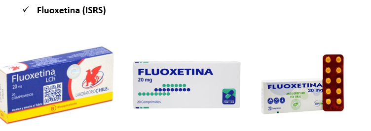
Bloquea el transportador de serotonina y aumenta la 5-HT en la sinapsis; sin tocar apenas la noradrenalina, por eso es activador más que sedante.
Su firma es el metabolito activo (norfluoxetina): mantiene el efecto días tras dejar de tomarla.
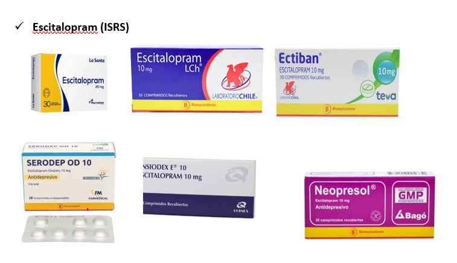
Inhibe la recaptación de serotonina con una selectividad altísima: casi sin contacto con histamina, muscarínicos ni adrenérgicos.
Eso explica dos ventajas clínicas: menos efectos adversos "de sobra" y, a diferencia de la fluoxetina o la paroxetina, no frena las enzimas de otros medicamentos (la carga de interacciones es mínima).
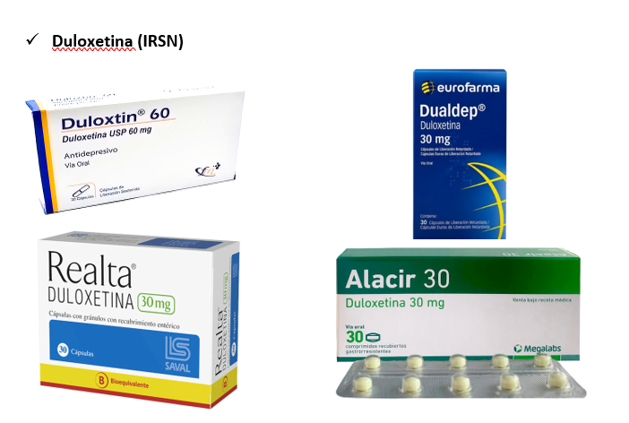
Eleva serotonina y noradrenalina en la sinapsis; el componente noradrenérgico refuerza la vía descendente de modulación del dolor en la médula espinal.
Por eso trata en una sola toma dos caras del mismo problema: el ánimo y el dolor que lo acompaña.
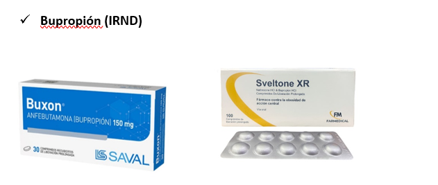
Sube dopamina y noradrenalina y deja quieta la serotonina: de ahí el efecto activador y su huella casi nula en la disfunción sexual.
El componente dopaminérgico explica además la ayuda en la atención (TDAH) y la regulación de los impulsos al fumador.
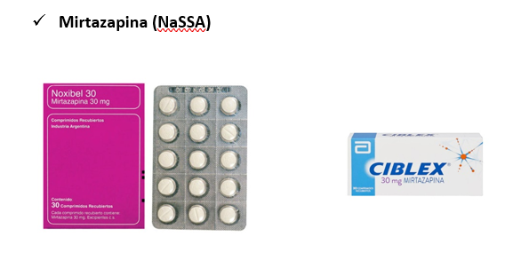
Bloquea los receptores alfa-2 presinápticos: sube noradrenalina y serotonina sin pasar por la recaptación; y como bloquea 5-HT2 y 5-HT3, casi no da náuseas ni disfunción sexual.
El bloqueo H1 (histamina) es su otra cara: somnolencia y apetito. Por eso, cuanto más baja la dosis, más "dormilona"; al subir, la noradrenalina despierta.
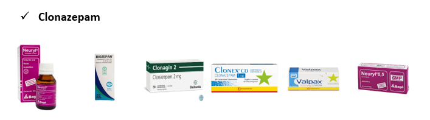
Modulador alostérico positivo del receptor GABA-A: se une al sitio benzodiacepínico y aumenta la frecuencia de apertura del canal de cloro.
El matiz que importa: las benzodiacepinas abren más veces el canal (frecuencia), mientras que el alcohol o los barbitúricos lo mantienen abierto más tiempo. Por eso la potenciación es dosis-dependiente y se puede controlar mejor.
La sedación, la amnesia y el efecto antiepiléptico vienen por la subunidad alfa-1; el efecto ansiolítico, por alfa-2 y alfa-3.
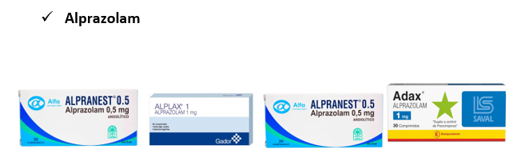
Modulador alostérico positivo del receptor GABA-A, con alta afinidad por el sitio benzodiacepínico.
La misma maquinaria que el clonazepam, pero su anillo de triazol le da un acoplamiento más rápido: gana potencia de inicio y la paga con rebote ansioso entre tomas.
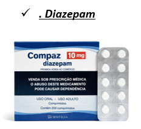
Modulador alostérico positivo del receptor GABA-A, como el resto de la clase.
Su particularidad es doble: potencia el canal de cloro en todo el encéfalo y, además, actúa a nivel de la médula espinal para la relajación muscular. Es la benzodiacepina más miorelajante y la más usada en urgencias.
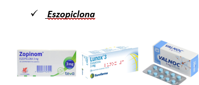
Se une al complejo GABA-A en el mismo sitio que las benzodiacepinas, pero con selectividad por la subunidad alfa-1, la encargada de la sedación.
El resultado es un fármaco "más hipnótico que ansiolítico": acorta la latencia y sostiene el sueño, con menos relajación muscular y menos ansiolisis que una benzodiacepina clásica.
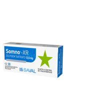
Agonista del sitio benzodiacepínico con selectividad por la subunidad alfa-1 del receptor GABA-A, la encargada de la sedación.
Por ser un hipnótico "puro" de las mismas características del eszopiclona, respeta mejor la arquitectura del sueño que una benzodiacepina y deja menos sedación al día siguiente.
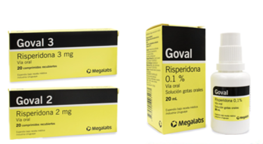
Bloquea receptores D2 y 5-HT2A, con mayor afinidad por el 5-HT2A que por el D2.
Ese bloqueo preferente del 5-HT2A es la razón de su menor frecuencia de síntomas extrapiramidales frente a los antipsicóticos típicos.
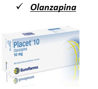
Bloquea receptores 5-HT2A y D2, y además H1, M1 y α1 adrenérgico.
Ese bloqueo múltiple explica su eficacia antipsicótica, pero también la sedación y el riesgo metabólico: la polifarmacia es justo lo que la diferencia de un atípico más selectivo como la risperidona.
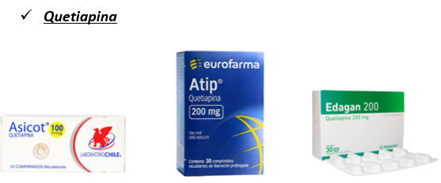
Bloquea receptores 5-HT2A, D2, H1 y α1, y actúa como agonista parcial en 5-HT1A.
El bloqueo de H1 explica la sedación y el de α1 la hipotensión ortostática. Su afinidad por M1 es baja, y por eso es la que menos síntomas extrapiramidales produce de la clase.
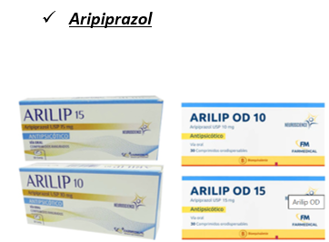
Agonista parcial de D2 y D3 y agonista parcial de 5-HT1A, a la vez que antagoniza 5-HT2A.
Por eso se le llama estabilizador de dopamina: frena la vía mesolímbica, donde hay exceso, y estimula la vía prefrontal, donde hay escasez. Esa es la razón de su bajo riesgo extrapiramidal y de que no eleve la prolactina.

Su acción completa no se conoce del todo. Modula la vía del inositol fosfato, inhibe la GSK-3β, regula la glutamatérgica y gabaérgica, y protege la neuroplasticidad.
Lo que importa en consulta: funciona como estabilizador gradual y no sedante — suaviza los altibajos sin apagar la vida afectiva, y su beneficio crece con los meses.

Acción múltiple: bloquea los canales de sodio, aumenta el GABA disponible y modera el glutamato.
En clínica importa su velocidad: para una manía aguda da alivio más rápido que el litio, por eso es primera elección en manía y episodios mixtos.
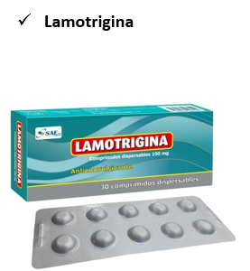
Bloquea los canales de sodio y reduce la liberación de glutamato: estabiliza la membrana sin sedar y sin aumentar de peso.
Su dirección clínica es única: protege más la fase depresiva que la maníaca. Por eso suele pedirse junto a un anti-maníaco (litio, valproato o un antipsicótico atípico).
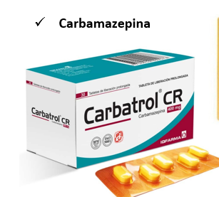
Bloquea los canales de sodio de forma uso-dependiente: frena sobre todo las neuronas que disparan muy rápido.
Por eso funciona en la neurona epiléptica y en la neuralgia (dolor con descargas de alta frecuencia), con un efecto estabilizador sobre la membrana.